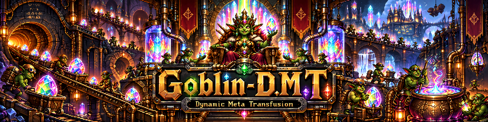

Goblin-D.M.T.#

⚗ Open the Dynamic Runtime Manual · GitHub-native README
The goblins explore. The engine remembers. Evidence decides. The user controls the transfusion.
Goblin-D.M.T. — Goblin-Dynamic.Meta.Transfusion — is an actor-driven runtime for OpenCode coding agents. It turns model exploration, branching, uncertainty, tool appetite, and premature convergence into bounded work that can be routed, evidenced, constrained, verified, checkpointed, and resumed.
- Public name: Goblin-D.M.T.
- Code name / agent:
g-dmt - npm package / primary CLI:
dmt - Underlying method lineage: Text-Fusion
- Current package version:
0.3.0 - Runtime policy: engine-state-bound, agent-ran, user-controlled
- Target models: GLM, DeepSeek, Kimi, Qwen, Muse, Nemotron, and other OpenCode-capable coding models
Goblin-D.M.T. is not a text diffusion model. It borrows useful generative-runtime mechanics—conditioning, branching, masks, non-destructive variants, evidence-driven re-opening, staged decode, explicit state, and bounded execution—without pretending LLM sampling is image diffusion.
Status#
v0.3.0 skill-routing build: LOCAL/MOCK PASS — 25/25 checks.
Packed npm artifact smoke: PASS.
Live OpenCode end-to-end smoke: PASS — GOBLIN_DMT_LIVE_E2E.
On 2026-09-10, D.M.T. completed a real provider-backed OpenCode smoke using:
dmt 0.3.0
opencode 1.18.30
model tokenrouter/z-ai/glm-5.3-free
agent g-dmt
skill workspace-snapshot
turn timeout 600s
result PASS GOBLIN_DMT_LIVE_E2E
The live smoke verified:
- stable OpenCode host compatibility;
- project-local
g-dmtagent discovery; - packed/isolation-safe D.M.T. plugin installation;
- stable-host plugin import;
- discovery of all nine
dmt_*plugin tools; SkillRouterActorrouting ofworkspace-snapshot;- CLI activation of the skill in canonical D.M.T. state;
- a real provider-backed
g-dmtturn; - native OpenCode loading of the installed
workspace-snapshotskill; - model invocation of
dmt_state; - CLI → already-running plugin state propagation without restart;
- no tracked-worktree mutation by the provider-backed smoke;
- persisted skill completion in the D.M.T. ledger; and
- healthy OpenCode server state after the live turn.
The package also retains its 25/25 local/mock verification and packed-artifact smoke. The live proof is intentionally read-only: it does not yet claim verification of the native OpenCode permission UI or a user-approved masked write.
Why this exists#
wandering -> bounded alternate branch
hallucinated idea -> quarantined hypothesis
tool enthusiasm -> evidence-seeking check
premature certainty -> challenger branch
failed patch -> evidence + rollback/re-noise
long-context drift -> canonical state + resume capsule
over-refactoring -> edit mask + mutation strength
D.M.T. does not try to erase these model tendencies with one giant prompt. It occupies them with actors and feeds the active model a small state-derived next-task contract.
Runtime shape#
USER
│
intent / authority
│
▼
┌──────────────────┐
│ Goblin-D.M.T. │
│ agent │
└────────┬─────────┘
│
ENGINE_PROMPT
│
▼
┌────────────────────────┐
│ single-writer engine │
│ state + logical clock │
│ hash-chained ledger │
└───────────┬────────────┘
│
┌─────────────────┼──────────────────┐
▼ ▼ ▼
exploration actors evidence actors SkillRouterActor
│ │ │
└──────────┬──────┴───────────┬──────┘
▼ ▼
constraints lazy skill load
+ edit mask only when warranted
│ │
└──────────┬───────┘
▼
COMMIT boundary
│
user gate if set
│
▼
execute -> verify
│
▼
decode -> format -> save
The active model is replaceable. Canonical engine state is not.
Install#
npm install /path/to/dmt-0.3.0.tgz
npx dmt init
dmt init installs:
.opencode/
├── agents/
│ └── g-dmt.md
└── skills/
└── g-dmt/
└── SKILL.md
.g-dmt/
└── config.json
The old stf and stable-text-fusion executables remain compatibility aliases in v0.3.0. New documentation and automation should use dmt.
Quick start#
dmt begin --mode develop --strength local \
"Fix the refresh race without changing the public session API"
dmt state
dmt skills route \
"Create a deterministic snapshot before reviewing this Go workspace"
dmt skills event activate workspace-snapshot
dmt skills event complete workspace-snapshot \
--reason "snapshot verified and identity recorded"
dmt approve commit
dmt ingest design.pdf --stdout | dmt prompt save design -
dmt prompt load design
dmt opencode --prompt design
Engine phases#
START -> captured
ENCODE -> encoded
EXPLORE -> exploring
GROUND -> grounded
CONSTRAIN -> constrained
COMMIT -> committed
EXECUTE -> executing
VERIFY -> verified
DECODE -> decoded
FORMAT -> formatted
SAVE -> saved
Controlled reopening is allowed when evidence invalidates a decision. D.M.T. does not force fake uncertainty after convergence.
Actors#
| Actor | Responsibility |
|---|---|
SupervisorActor |
Canonical phase, budget, clock, transitions, pause/abort |
ConditionActor |
Goal, success, facts, assumptions, unknowns, references |
DivergenceActor |
Materially different candidates where ambiguity exists |
ChallengerActor |
One serious alternate when the lead is weak |
EvidenceActor |
Cheapest discriminating read/search/test |
ConstraintActor |
Hard anchors, negatives, compatibility, strength |
MaskActor |
Writable region and scope-escape detection |
BranchActor |
Parent/child candidate lineage |
MutationActor |
Bounded post-commit edits |
VerifyActor |
Attempts to falsify implementation claims |
DecodeActor |
Produces the requested artifact |
FormatActor |
Local/native formatting after semantics stabilize |
PersistenceActor |
Checkpoint/run/prompt persistence |
SkillRouterActor |
Routes one appropriate installed skill |
UserGateActor |
Boundary the model cannot impersonate |
Skill routing#
OpenCode skills are not pre-injected into the agent. D.M.T. keeps a compact routing manifest, chooses a skill only for a concrete bounded job, and lets OpenCode load its body on demand.
task + phase + actually available skill IDs
│
▼
SkillRouterActor
│
route / no-route
│
exact skill ID
│
▼
OpenCode native skill loader
│
▼
SKILL_ACTIVATE event
│
bounded skill workflow
│
▼
SKILL_COMPLETE / SKILL_FAIL
│
▼
canonical engine evidence
A skill is a capability, not authority. It cannot expand the edit mask, self-grant commit approval, enable external sync, authorize git push, or promote speculation to fact.
Current skill-pack snapshot#
v0.3.0 was built from the supplied opencode-skillz-master(2).zip:
SHA-256:
f3949bc7e88805d62814d209084481567de22ee4ba8b3939f948a6f2fa5f7d02
14 native SKILL.md definitions
7 direct/legacy workflow sources
23 taxonomy-only entries
21 curated routable descriptors
Taxonomy-only names are never treated as callable skills just because an index mentions them.
When, where, and how the current skills are used#
| Skill | Actor / phase | When | How / boundary |
|---|---|---|---|
workspace-snapshot |
SnapshotActor · CAPTURE/GROUND |
archive/repo/file identity, handoff, drift, resume | deterministic snapshot; never execute target merely to inspect |
zero-review-graph |
GraphEvidenceActor · GROUND/VERIFY |
Go/Rust/ZeroLang review/debug | graph-first retrieval/blast radius; graph is evidence, not proof |
prompt-dev-formalization |
FormalizationActor · CONDITION/CONSTRAIN |
loose dev intent needs a build contract | preserve provenance and exact requirement disposition |
research-module |
ResearchCorpusActor · GROUND/SAVE |
explicitly requested research corpus | explicit/ask-gated; preserve source precedence and paired metadata |
go-wiki-memory |
ReadOnlyMemoryActor · CAPTURE/GROUND |
shared/local Go-Wiki context is relevant | read-only context; never execution authority |
dynamic-build-ledger |
LedgerActor · governed lifecycle |
existing DBL or explicit init | skill's own init gate remains binding; never auto-init |
update-ledger-compact |
CompactionLedgerActor · pre-compaction |
active authorized DBL before compaction | persist first, compact, then reground |
make-an-opencode-plugin |
ExtensionBuilderActor · GROUND→VERIFY |
OpenCode plugin/tool/hybrid work | version-aware host/API check; least-powerful correct extension |
make-an-opencode-skill |
SkillBuilderActor · GROUND→VERIFY |
create/repair/audit an OpenCode skill | validate discovery/frontmatter and loading |
make-a-new-local-repo |
RepositoryBootstrapActor · COMMIT→VERIFY |
explicit repo bootstrap/adoption | local work; external push remains separately authorized |
local-ai-runtime-optimizer |
RuntimeOptimizerActor · GROUND→VERIFY |
local AI machine/runtime audit | OBSERVE→REVIEW→EXECUTE→VERIFY with high-impact gates |
make-build-ledger |
LegacyLedgerReaderActor · GROUND |
older ledger compatibility | explicit/read-only; prefer dynamic-build-ledger |
i-have-adhd |
OutputStyleActor · presentation |
user explicitly activates it | explicit/ask-gated; never infer from user traits |
mr-meeseeks |
ComedyOverlayActor · presentation |
user explicitly requests persona/comedy mode | explicit/ask-gated; no authority effect |
planning-brainstorm-light-research |
IncubationActor · CAPTURE→EXPLORE |
early idea-space/light research | installed-only; preserve idea != decision |
dev-planning-research |
DevelopmentResearchActor · GROUND→COMMIT |
selected idea needs feasibility/architecture | installed-only; separate intent/proposal/authorization |
project-review-suggestions |
ProjectReviewActor · GROUND/VERIFY |
active project advisory review | installed-only; suggestions do not self-approve |
public-release-finalizer |
ReleaseGateActor · VERIFY/SAVE |
public-release preparation | installed-only; readiness does not authorize publish |
build-tt-handoff |
HandoffActor · boundary/SAVE |
model/session/builder boundary | installed-only; durable evidence/authority/next work |
build-tt-rake |
RetrospectiveActor · post-VERIFY |
retrospective/scar map | installed-only/read-only; no retroactive truth |
build-tt-adhd |
DivergentTestimonyActor · late EXPLORE/handoff |
preserve divergent architectural intuition | installed-only; testimony stays separate from truth |
The machine-readable inventory is assets/skill-routing/current-skills.json; the full routing contract is docs/SKILL-ROUTING.md.
Recommended sequential compositions#
workspace-snapshot
-> zero-review-graph
planning-brainstorm-light-research
-> dev-planning-research
make-an-opencode-skill | make-an-opencode-plugin
-> project-review-suggestions
project-review-suggestions
-> public-release-finalizer
dynamic-build-ledger
-> update-ledger-compact
Finish/fail one skill, distill its output to canonical state/evidence, then load the next. Do not inject multiple full skill bodies simultaneously.
Explicit-only policy#
g-dmt places structural ask gates around:
research-modulei-have-adhdmr-meeseeksmake-build-ledger
This matters because one supplied skill includes frontmatter from an adjacent skill ecosystem. D.M.T. does not depend on unknown OpenCode fields to enforce an explicit-only policy.
Plugin tools#
dmt_begin
dmt_state
dmt_transition
dmt_checkpoint
dmt_format
dmt_prompt_store
dmt_skill_route
dmt_skill_event
dmt_sync
dmt_skill_route uses task/phase plus the available skill set. The OpenCode 2 adapter can filter against its advertised host skill list. A manifest entry cannot manufacture an unavailable skill.
Only one skill may be active in canonical state at a time.
Mutation strength and code inpainting#
| Strength | Meaning |
|---|---|
surface |
presentation/text/formatting-level change |
local |
narrow function/file implementation |
module |
coordinated bounded-subsystem change |
rewrite |
intentionally broad redesign, still anchor/mask-bound |
The edit mask answers where mutation may occur. Read-only evidence gathering can leave the mask; mutation cannot. apply_patch targets are parsed and checked, and an unresolvable masked patch fails closed.
User-controlled boundaries#
The model/skills cannot manufacture approval for:
commit gate
scope expansion
external sync
git push
publication/release
deployment
messages
irreversible destructive effects
When configured, the user can grant commit from a separate CLI process:
dmt approve commit
The long-lived plugin refreshes canonical disk state so this approval is observed without requiring a host restart.
Prompt ingestion and persistence#
dmt ingest architecture.pdf --stdout | dmt prompt save architecture -
dmt prompt load architecture
dmt opencode --prompt architecture
Document ingestion uses a configured MarkItDown-compatible converter when available. Conversion is normalization, not proof of visual/layout fidelity.
Local new state lives under .g-dmt/. The loader can still read legacy .stable-text-fusion/config.json for migration compatibility.
External prompt/run push/pull is explicit:
dmt push prompt architecture --remote ~/my-dmt-store
dmt pull prompt architecture --remote ~/my-dmt-store
Compaction and model handoff#
Compaction preserves state, not transcript: run/phase, goal, selected branch, anchors, edit mask, strength, verification, residual unknowns, active skill, and next contract.
A model handoff is a worker replacement:
checkpoint
-> compact state
-> swap model/provider
-> reload canonical state
-> continue ENGINE_PROMPT
OpenCode integration#
Goblin-D.M.T. is model-unpinned so the selected coding model remains replaceable. The package exposes:
server(ctx) # stable-host adapter
setup(ctx) # OpenCode 2 adapter
The project agent uses stable-compatible frontmatter as the common denominator. Skills remain lazy-loaded native capabilities.
Verification#
v0.3.0 passes 25/25 local/mock checks spanning compile/core invariants, cross-process user approval, edit-mask enforcement, cached graph evaluation, both host adapters, skill inventory/routing, explicit-only behavior, missing-skill filtering, serialized skill lifecycle, renamed CLI/init, MarkItDown-style piping, prompt persistence, argv-safe OpenCode launching, and package contents.
A separate packed-artifact smoke extracted dmt-0.3.0.tgz into a blank workspace and successfully ran:
init
-> begin
-> skill route
-> skill activate
-> state
-> skill complete
-> state
The real OpenCode smoke then exercised the packaged runtime against OpenCode 1.18.30 with tokenrouter/z-ai/glm-5.3-free:
DMT_TURN_TIMEOUT=600 ./scripts/smoke-opencode-live.sh
Expected terminal checkpoint:
PASS server API discovers all 9 Goblin-D.M.T. plugin tools
PASS CLI activated workspace-snapshot in canonical DMT state
PASS provider-backed g-dmt turn loaded workspace-snapshot and called dmt_state
PASS live plugin observed CLI-owned active skill without server restart
PASS provider-backed smoke left tracked repository content unchanged
PASS workspace-snapshot completion persisted in DMT ledger
PASS OpenCode server remained healthy after live DMT turn
PASS GOBLIN_DMT_LIVE_E2E
This raises the verified boundary from mock-only integration to a real OpenCode + real provider + native skill + cross-process canonical-state end-to-end path.
See docs/SMOKE-TEST.md for the local/mock contract. The live-provider evidence above should be kept in sync with scripts/smoke-opencode-live.sh.
Design lineage#
- Dream Textures: host/backend separation, worker actors, validation, cancellation, execution graphs, cached dependencies.
- NanoBananaEditor: generate/edit/mask modes, references, non-destructive variants and parent-linked history.
- Verse: effects, failure as control flow, speculative rollback, structured concurrency.
- Text-Fusion: direct pre-rename diffusion-inspired runtime lineage.
Brand/interface principle#
goblins = bounded exploratory actors
workbenches = candidate branches
specimens = evidence
bolted fixtures = hard constraints
repair stencil = edit mask
engine register = canonical state
transfusion = compact state-derived task conditioning
inspection = verification
SOURCE TRUTH FIRST. BRAND SECOND. PRESENTATION THIRD.
NO EXPANSION WITHOUT VALIDATION.
Repository layout#
.
├── assets/
│ ├── goblin-dmt-banner.png
│ ├── opencode/
│ │ ├── agents/g-dmt.md
│ │ └── skills/g-dmt/SKILL.md
│ └── skill-routing/current-skills.json
├── docs/
│ ├── ARCHITECTURE.md
│ ├── CLI.md
│ ├── SKILL-ROUTING.md
│ └── SMOKE-TEST.md
├── src/
│ ├── cli.ts
│ ├── index.ts
│ └── engine/
│ ├── machine.ts
│ ├── runtime.ts
│ ├── skills.ts
│ └── ...
├── scripts/
│ └── smoke-opencode-live.sh
├── test/
├── README.md
└── package.json
If you liked Goblin-D.M.T.#
If this project was useful or interesting, visit Goblin-Logic-Manager — another Goblin project focused on disciplined OpenCode development behavior, model-specific tuning overlays, reproducible agent rendering, and validation-gated expansion.
Release boundary#
A D.M.T. PASS means only that the stated checks actually ran and passed.
For v0.3.0, the verified boundary now includes one real provider-backed OpenCode end-to-end run with:
OpenCode 1.18.30
tokenrouter/z-ai/glm-5.3-free
g-dmt
workspace-snapshot
all 9 dmt_* tools
CLI -> live-plugin state refresh
ledger completion persistence
tracked-worktree immutability
post-turn server health
It still does not imply that every model/provider, the native OpenCode permission UI, remote prompt stores, registry publication, deployment, release publication, or an irreversible action has been tested.
The next confidence step is one deliberately bounded, user-approved masked edit: prove the permission/approval boundary, constrain the edit mask, execute the smallest mutation, verify the resulting diff, and confirm rollback/evidence behavior.
Goblin-D.M.T. — Goblin-Dynamic.Meta.Transfusion
The goblins explore. The engine remembers. Evidence decides. The user controls the transfusion.
Banner image by GPT-5.6 Sol (High).